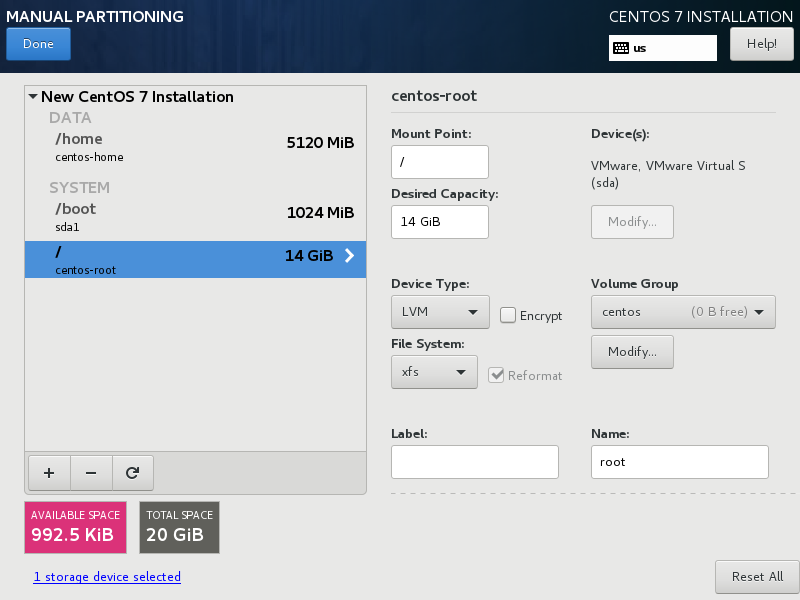
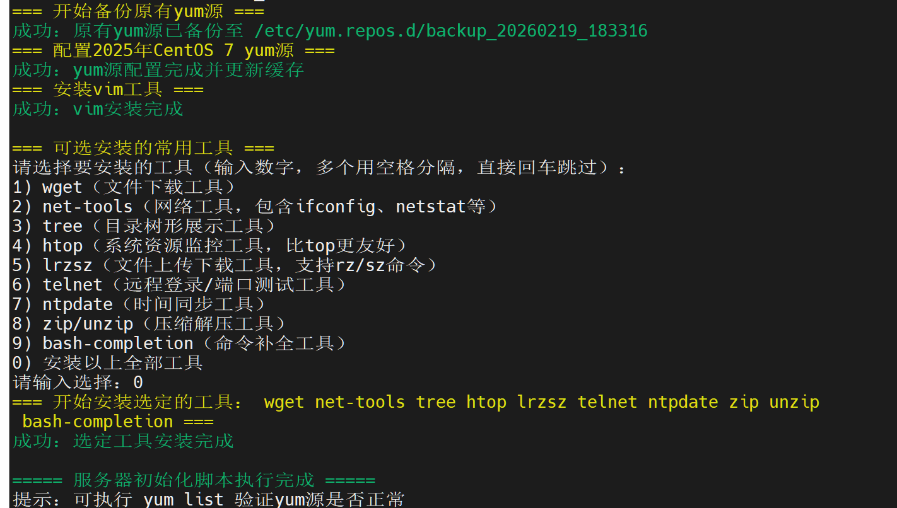

基础设施准备
初始服务器搭建与配置
服务器基础环境要求
* CPU: 1 Core
* 内存: 1 GB
* 系统: CentOS 7.5 (1804)
1. 系统安装与磁盘分配
在安装操作系统进行磁盘分区时，请特别注意：不要配置 Swap 分区。
❗ 重要提示
不配置 Swap 分区是为了避免影响后续 Kubernetes (k8s) 集群的正常使用。K8s 默认要求关闭 Swap，若存在 Swap 可能导致 Pod 调度失败。

---
2. 服务器初始网络配置
系统安装完成后，首先需要修改网卡配置以确保开机自启，并启动网络服务。
2.1 修改网卡开机自启
执行以下命令修改网卡配置文件，将 ONBOOT 参数设置为 yes：
sed -i '/^ONBOOT=/c ONBOOT=yes' /etc/sysconfig/network-scripts/ifcfg-ens332.2 开启网卡并设置自启动
使用 systemctl 管理网络服务：
systemctl enable network --now---
3. 脚本自动化初始化配置
为了简化配置流程，我们编写了一个初始化脚本 init.sh。该脚本涵盖了 YUM 源备份、阿里云源配置、常用工具安装等功能。
3.1 创建并编辑脚本
使用 vim 创建脚本文件：
vim init.sh将以下内容完整复制到文件中：
#!/bin/bash
# CentOS 7 服务器初始化脚本
# 定义颜色输出
RED='\033[0;31m'
GREEN='\033[0;32m'
YELLOW='\033[1;33m'
NC='\033[0m'
# 1. 备份当前 yum 源
backup_yum() {
echo -e "${YELLOW}=== 开始备份当前 yum 源 ===${NC}"
YUM_BACKUP_DIR="/etc/yum.repos.d/backup_$(date +%Y%m%d_%H%M%S)"
mkdir -p $YUM_BACKUP_DIR
mv /etc/yum.repos.d/*.repo $YUM_BACKUP_DIR 2>/dev/null
if [ $? -eq 0 ]; then
echo -e "${GREEN}成功：当前 yum 源已备份至 $YUM_BACKUP_DIR${NC}"
else
echo -e "${YELLOW}提示：未检测到 yum.repo 文件，跳过备份${NC}"
fi
}
# 2. CentOS 7 yum 源（阿里云源，稳定且更新）
config_yum() {
echo -e "${YELLOW}=== 配置 2025 年 CentOS 7 yum 源 ===${NC}"
# 下载阿里云 CentOS 7 基础源
curl -o /etc/yum.repos.d/CentOS-Base.repo https://mirrors.aliyun.com/repo/Centos-7.repo >/dev/null 2>&1
if [ $? -ne 0 ]; then
echo -e "${RED}错误：下载 yum 源失败，请检查网络${NC}"
exit 1
fi
# 替换源中的变量（适配 CentOS 7 EOL 后的源）
sed -i 's/$releasever/7/g' /etc/yum.repos.d/CentOS-Base.repo
sed -i 's/^mirrorlist/#mirrorlist/g' /etc/yum.repos.d/CentOS-Base.repo
sed -i 's/^#baseurl/baseurl/g' /etc/yum.repos.d/CentOS-Base.repo
# 配置 epel 源（扩展工具源）
curl -o /etc/yum.repos.d/epel.repo https://mirrors.aliyun.com/repo/epel-7.repo >/dev/null 2>&1
# 清理并更新 yum 缓存
yum clean all >/dev/null 2>&1
yum makecache >/dev/null 2>&1
echo -e "${GREEN}成功：yum 源配置完成并更新缓存${NC}"
}
# 3. 安装 vim 工具
install_vim() {
echo -e "${YELLOW}=== 安装 vim 工具 ===${NC}"
yum install -y vim-enhanced >/dev/null 2>&1
if [ $? -eq 0 ]; then
echo -e "${GREEN}成功：vim 安装完成${NC}"
else
echo -e "${RED}错误：vim 安装失败${NC}"
fi
}
# 4. 可选安装常用工具菜单
install_optional_tools() {
echo -e "\n${YELLOW}=== 可选安装的常用工具 ===${NC}"
echo "请选择要安装的工具（输入数字，多个用空格分隔，直接回车跳过）："
echo "1) wget（文件下载工具）"
echo "2) net-tools（网络工具，包含 ifconfig、netstat 等）"
echo "3) tree（目录树形展示工具）"
echo "4) htop（系统资源监控工具，比 top 更友好）"
echo "5) lrzsz（文件上传下载工具，支持 rz/sz 命令）"
echo "6) telnet（远程登录/端口测试工具）"
echo "7) ntpdate（时间同步工具）"
echo "8) zip/unzip（压缩解压工具）"
echo "9) bash-completion（命令补全工具）"
echo "0) 安装以上全部工具"
read -p "请输入选择：" CHOICES
# 定义工具对应关系
declare -A TOOLS=(
[1]="wget"
[2]="net-tools"
[3]="tree"
[4]="htop"
[5]="lrzsz"
[6]="telnet"
[7]="ntpdate"
[8]="zip unzip"
[9]="bash-completion"
[0]="wget net-tools tree htop lrzsz telnet ntpdate zip unzip bash-completion"
)
# 安装选择的工具
if [ -n "$CHOICES" ]; then
INSTALL_LIST=""
for CHOICE in $CHOICES; do
if [ -n "${TOOLS[$CHOICE]}" ]; then
INSTALL_LIST="$INSTALL_LIST ${TOOLS[$CHOICE]}"
else
echo -e "${YELLOW}提示：无效选项 $CHOICE，已跳过${NC}"
fi
done
if [ -n "$INSTALL_LIST" ]; then
echo -e "${YELLOW}=== 开始安装选定的工具：$INSTALL_LIST ===${NC}"
yum install -y $INSTALL_LIST >/dev/null 2>&1
if [ $? -eq 0 ]; then
echo -e "${GREEN}成功：选定工具安装完成${NC}"
else
echo -e "${RED}错误：部分工具安装失败，请检查${NC}"
fi
fi
else
echo -e "${YELLOW}提示：跳过可选工具安装${NC}"
fi
}
# 主执行流程
main() {
echo -e "${YELLOW}===== 开始执行 CentOS 7 服务器初始化脚本 =====${NC}"
backup_yum
config_yum
install_vim
install_optional_tools
echo -e "\n${GREEN}===== 服务器初始化脚本执行完成 =====${NC}"
echo -e "提示：可执行 yum list 验证 yum 源是否正常"
}
# 执行主函数
main3.2 赋予执行权限并运行
保存脚本后，赋予执行权限并运行：
chmod +x init.sh
bash init.sh
本阶段成果
完成服务器基础系统安装、网络配置和初始化脚本准备，为后续 K8s Master 与 Node 节点部署打下统一环境基础。